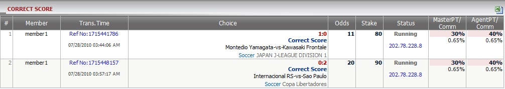

Correct Score
Definition:
Show master, agent win/loss amount based on position taking for tickets which have bet type: Correct Score. This report is separated by each transaction and contains all detailed information of that transaction.

figure 1.1
- In the figure above, we can see the following bet details of all members under this master:
- 1st bet: member account "member1", reference no: 1715441786, trans. date: 07/28/2010, bet type: Correct Score, score: 1-0, match: Montedio Yamagata -vs- Kawasaki Frontale, league: JAPAN J-LEAGUE DIVISION 1, odds = 11, stake = 80, Master Position Taking = 30%, Master Commission = 0.65%, Agent Position Taking = 40%, Agent Commission = 0.65%.
- 2nd bet: member account "member1", reference no: 1715448157, trans. date: 07/28/2010, bet type: Correct Score, score: 0-2, match: Internacional RS -vs- Sao Paulo, league: Copa Libertadores, odds = 20, stake = 90, Master Position Taking = 30%, Master Commission = 0.65%, Agent Position Taking = 40%, Agent Commission = 0.65%.